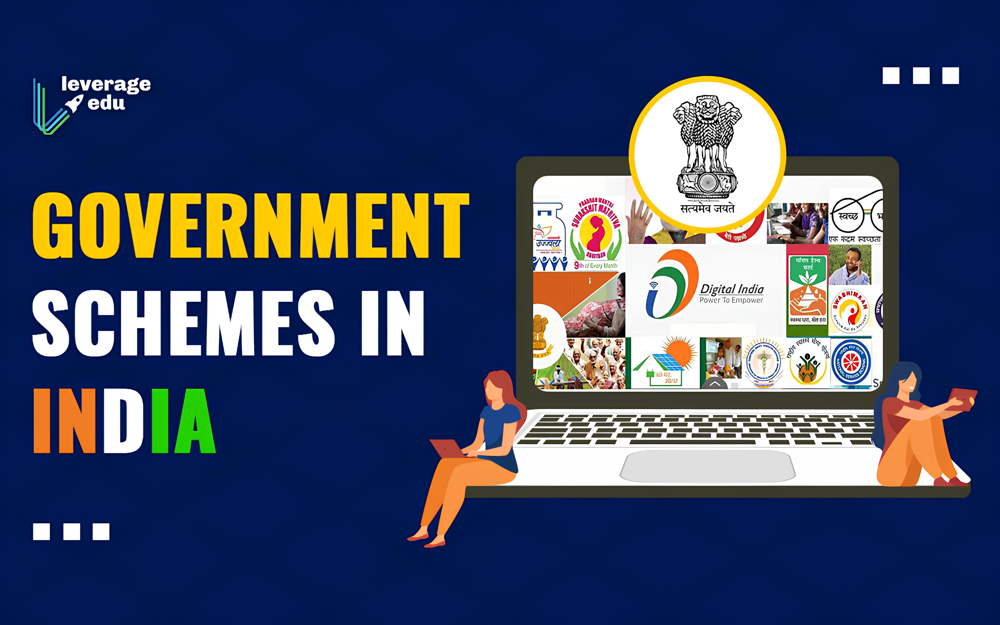

AgroShield
Home
Sustainable Goals
Schemes
About us

Government Schemes running in INDIA
Central India Schemes
Andhra Pradesh
Arunachal Pradesh
Assam
Bihar
Chhattisgarh
Goa
Gujarat
Haryana
Himachal Pradesh
Jharkhand
Karnataka
Kerala
Madhya Pradesh
Maharashtra
Manipur
Meghalaya
Mizoram
Nagaland
Odisha
Punjab
Rajasthan
Sikkim
Tamil Nadu
Telangana
Tripura
Uttar Pradesh
Uttarakhand
West Bengal